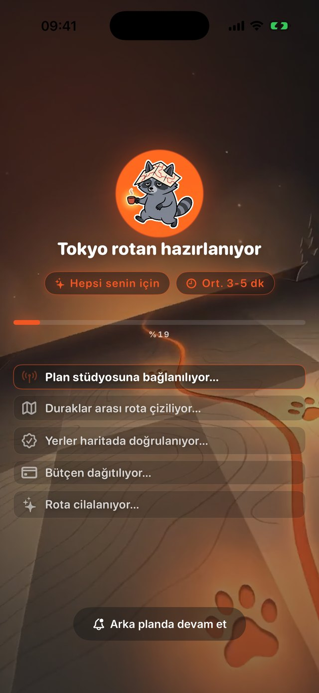
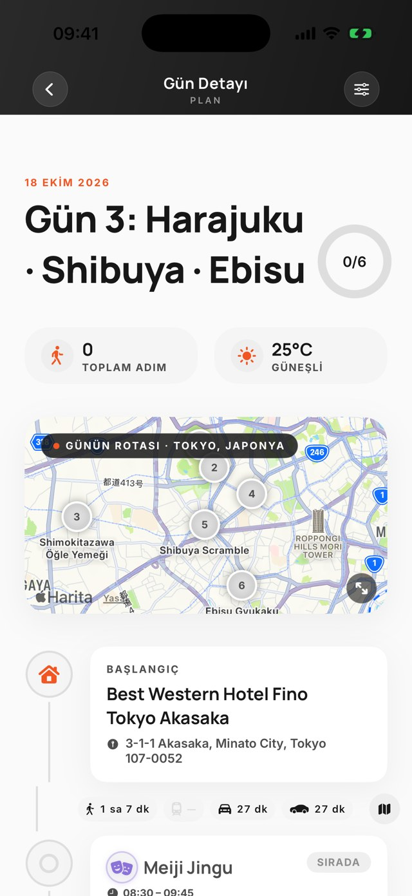
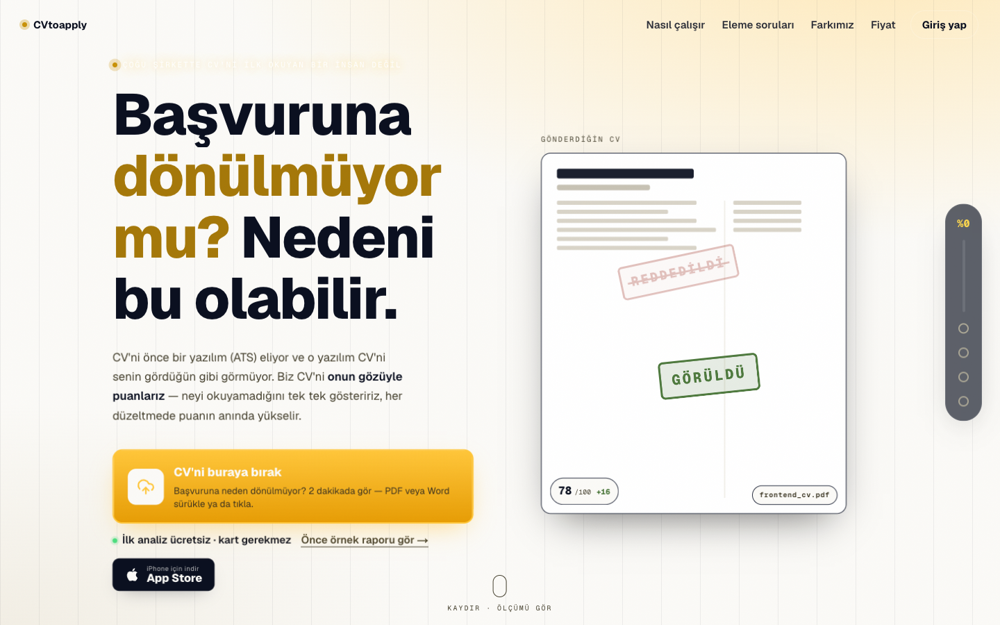

Öne çıkan app · iOS
Şehri ve tarihleri seç; TripWalkers gün gün planını yazsın. Arkadaşlarını davet et, aynı plan üzerinden birlikte gezin.


Öne çıkan SaaS · Web
İlanı yapıştır; CV'n o ilana göre, ATS'nin ilk okumada anlayacağı şekilde yeniden yazılsın.

Kurumsal · NDA
Veri doğrulama, raporlama ve karar destek araçları. Müşteri adlarını paylaşmıyoruz; sonuçları konuşuyoruz.